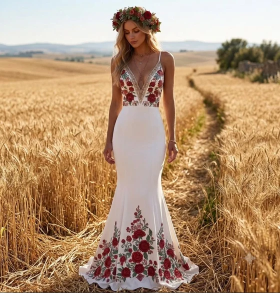
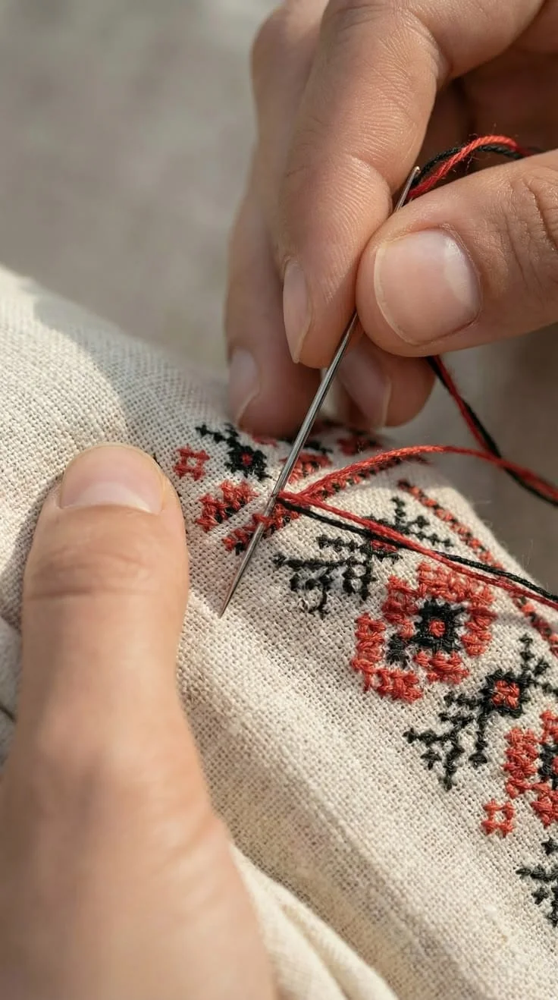
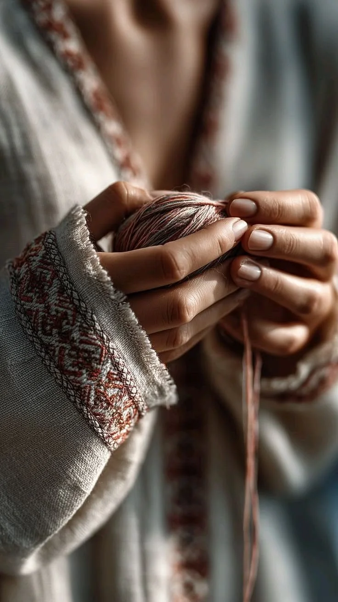
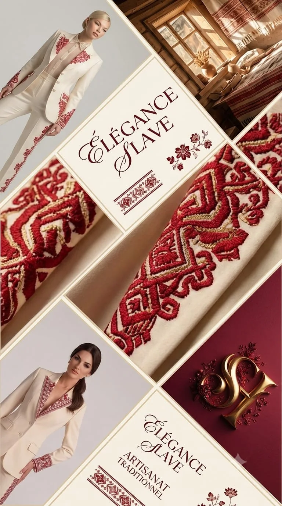

Bien avant de devenir un motif de mode, la broderie slave était un langage. Dans les campagnes de Pologne, mais aussi de Russie, d'Ukraine, de Biélorussie et des Balkans, les femmes brodaient depuis des siècles des symboles transmis de mère en fille — des croix, des roses, des oiseaux, des arbres de vie — chacun porteur d'un sens : protection, fertilité, appartenance à un village, à une famille.
Un savoir-faire né à la campagne
Ce n'était pas un art réservé à une élite. C'était un geste du quotidien, pratiqué le soir à la lueur d'une lampe, entre deux travaux des champs. Les femmes âgées transmettaient les points et les motifs aux plus jeunes, souvent sans jamais les écrire — la mémoire passait par les mains, par la répétition, par les vêtements portés lors des fêtes et des mariages.

Chaque région avait ses couleurs et ses symboles propres : le rouge et le noir dominaient en Pologne comme en Ukraine, tandis que d'autres régions d'Europe de l'Est privilégiaient des palettes plus dorées ou plus sombres. Mais partout, le principe restait le même : broder, c'était raconter d'où l'on venait.

Le lin, une matière qui a traversé les siècles
Le tissu de prédilection de cette tradition était le lin — une fibre naturelle, cultivée localement, robuste et respirante. Bien avant que le mot « bio » n'existe, ces femmes travaillaient déjà une matière durable, tissée à la main, puis brodée avec des fils de coton ou de laine teints avec des pigments naturels.
C'est cette même exigence de matière noble et responsable que nous voulons faire vivre aujourd'hui : un lin choisi avec soin, pensé pour durer, et habillé de broderies qui rendent hommage à ce geste ancestral.
Autrefois ➜ aujourd'hui
Le chemin d'un motif
- AutrefoisLe villageLes femmes brodent le soir, à la main, des motifs transmis de mère en fille.
- La matièreLe linUne fibre naturelle tissée à la main, choisie pour durer.
- Aujourd'huiParis, Rome, PragueSLAVE HAFTA fait voyager ces motifs sur des coupes modernes.

« Broder, c'était raconter d'où l'on venait. »
Une broderie qui traverse le monde, aujourd'hui
Ce savoir-faire ne s'arrête plus aux frontières d'un village, ni à celles d'un pays. Aujourd'hui, SLAVE HAFTA porte cette broderie slave sur des pièces pensées pour être vécues partout dans le monde — à Paris, à Rome, ou ailleurs — sans jamais trahir son origine.
Chaque point brodé continue de raconter la même histoire, mais avec une élégance nouvelle : des coupes contemporaines, des matières nobles choisies pour durer, et un geste artisanal qui refuse la vitesse de la mode jetable. Porter une pièce SLAVE HAFTA, c'est faire voyager cette mémoire brodée, d'un village slave d'autrefois jusqu'aux rues d'aujourd'hui.
La créatrice
Une créatrice polonaise, un héritage slave
Je m'appelle Malgorzata, je suis polonaise. J'ai créé SLAVE HAFTA pour rendre hommage à mes origines.
Mais la broderie slave ne s'arrête pas aux frontières de la Pologne : on la retrouve en Ukraine, en Slovaquie, en Tchéquie, en Biélorussie et jusque dans les Balkans. C'est tout cet héritage d'Europe de l'Est que je veux faire voyager.
Formée au stylisme et au modélisme, je réinterprète ces motifs sur des coupes d'aujourd'hui, brodées, pour la femme moderne qui ose.
Malgorzata

Pièces brodées artisanales inspirées du folklore slave ancestral — réinterprétées pour la femme moderne qui ose.
Découvrir la collection